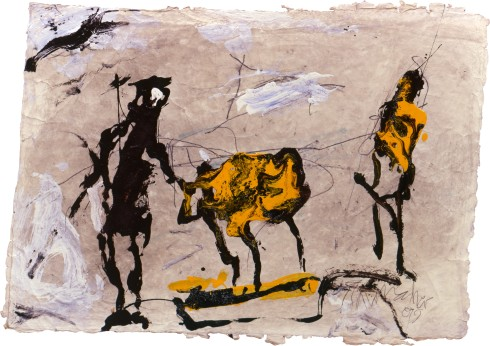

EMIL SCHUMACHER
PASTORALE - BUKOLISCHE SZENEN
Die Ausstellung beleuchtet erstaunlicherweise zum ersten Mal die Bedeutung des Themas „Mensch und Tier in der Natur“ im Werk Emil Schumachers und wirft so gleichzeitig auch ein neues Licht auf die ausgeprägten landschaftlichen Assoziationen in den abstrakten Werken der 1960er- und 70er-Jahre. Die Pastorale ist schon zurzeit der Gründung der Künstlergruppe „junger westen“ angelegt, die in diesem Jahr mit zahlreichen Jubiläumsausstellungen gefeiert wird. In seinem Spätwerk der 1980er- und 90er-Jahre erreichte Schumacher jedoch weit mehr als einen Kreisschluss innerhalb seines eigenen Œuvres. Mit ungebrochener Erfindungskraft griff er das Thema erneut auf und schuf gegen Ende des 20. Jahrhunderts einen eigenständigen Beitrag zur Tradition der Bukolischen Dichtung in der Malerei, deren Ursprünge bereits auf die Zeit vor der hellenischen Antike zurückgehen.
PASTORALE - BUKOLISCHE SZENEN
Zur Ausstellung erscheint ein Katalog – 96 Seiten, 84 Abbildungen, mit einem Vorwort von Ulrich Schumacher sowie einem Beitrag von Rouven Lotz. Preis im Museum € 19,90 (€ 24,90 im Buchhandel, ISBN 978-3-86206-667-4).

Emil Schumacher
Pastorale -
Bukolische Szenen
9. Juli
bis 14. Januar 2018